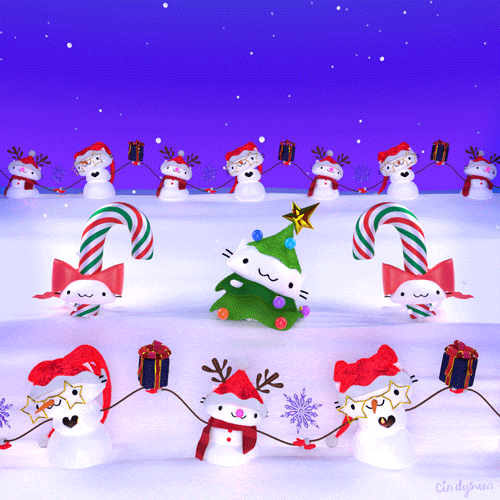
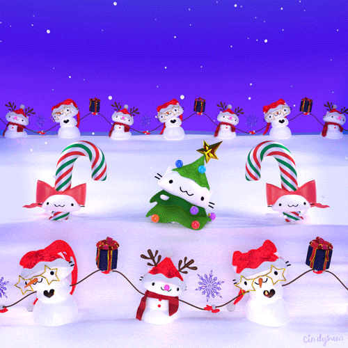

December 25 Christmas Day has been a federal holiday in the United States since 1870.
What are some fun Christmas activities?
1. Take A Holiday Card Photo
2. Visit A Christmas Tree Farm
3. Decorate A Gingerbread House
4. Bake Unique Christmas Cookies
5. Plan A Family Photoshoot
6. Host A Holiday Game Night
7. Host A Christmas Craft Party
8. Create Snowglobes From Mason Jars
9. Create A Santa Key
10. Build A Snowman

6 Things To Do On Christmas Day To Make It The Most Wonderful Time Of The Year
1. Create decorations
2. Go iceskating
3. Attend a tree lighting ceremony
4. Get a picture taken with Santa
5. Bake cookies
6.Decorate ugly Christmas sweaters
Celebration Time!!

2. Go iceskating
3. Attend a tree lighting ceremony
4. Get a picture taken with Santa
5. Bake cookies
6.Decorate ugly Christmas sweaters
Celebration Time!!
